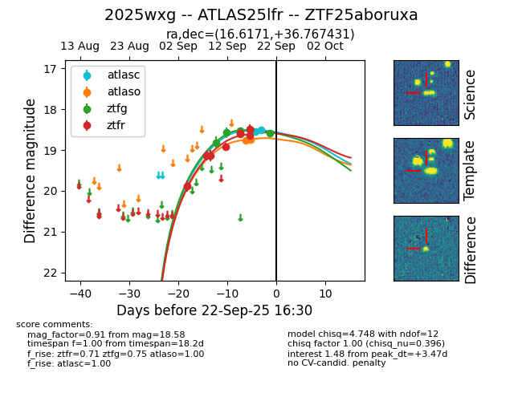
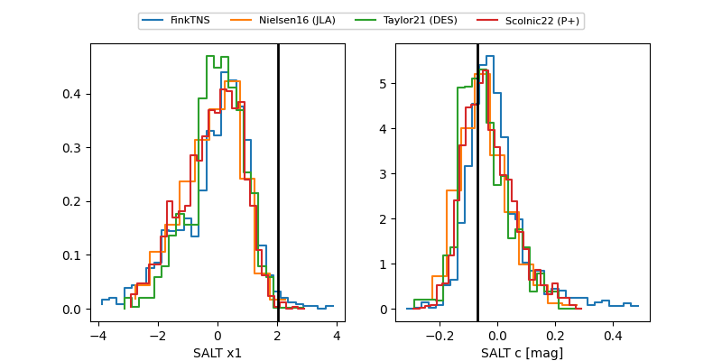

FINK: ZTF25aboruxa
Lasair: ZTF25aboruxa
ALeRCE: ZTF25aboruxa
TNS: 2025wxg
YSE: 2025wxg
ZTF25aboruxa (ztf,fink)
2025wxg (tns,yse)
ATLAS25lfr (atlas)
equatorial (ra, dec) = (16.6171,+36.76743)
galactic (l, b) = (126.2807,-26.00657)


last atlasc=18.51, atlaso=18.75, ztfg=18.58, ztfr=18.65
2 atlasc, 2 atlaso, 5 ztfg, 8 ztfr detections